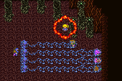

Story Line (6)
โลกใต้น้ำ
แผนที่ใต้น้ำของ Galuf World
มีจุดที่สามารถไปได้เพียง 3 แห่งเท่านั้น
จุดหมายต่อไปคือ ถ้ำของ Guido ซึ่งอยู่ตรงกลางของแผนที่ใต้น้ำ
แต่แนะนำว่า ควรทำ Side-Quest เสียก่อน
และควรแวะไปหมู่บ้าน Mua ก่อนด้วย เพราะมี Item ดีๆ ขายมากมาย
Side-Quest
"Chocobo Female"
เมื่อได้เรือดำน้ำแล้ว ให้ไปยังถ้ำใต้น้ำด้านทิศตะวันตกเฉียงเหนือ
จะมีป่า Chocobo อยู่ ซึ่งมี Chocobo เพศเมีย อาศัยอยู่ด้วย
Side-Quest "Summon
Magic Shoat"
ป่าใกล้ๆ กับป่า Chocobo Female จะมี Shoat อาศัยอยู่
Mua
ต้องใช้เรือดำน้ำผ่านมาจากทางใต้น้ำ แล้วจึงโผล่ขึ้นมาบนทะเลสาบใกล้ๆ กับหมู่บ้าน
ภายใน Pub ของหมู่บ้าน Mua จะมี Piano07 ให้เล่นด้วย

เมื่อเล่นเปียโนตัวนี้จบ จะมีข้อความบอกว่า ใกล้จะเป็น Master แห่ง Piano
แล้ว (ฮิฮิ)

* Note : อย่าลืมเล่น Piano ให้ครบทุกอันด้วย จะได้ Song
เป็นของตอบแทน
ภายในหมู่บ้านจะมีมีด Gardian ซ่อนอยู่ในถังไม้ด้านซ้ายของ Pub ด้วย
Guido's Cave
ภายในถ้ำ จะเจอหีบสมบัติที่มีก้อนหินอยู่ภายใน
หากนำก้อนหินไปใส่ในหีบสมบัติที่เปิดแล้ว จะทำให้ประตูเปิดได้
ซึ่งมีอยู่ทั้งหมด 4 ประตู
ภายในจะมีศัตรูที่สามารถแปลงร่างได้ด้วย
Metamorpha
Level : 43
HP : 7,000
Weakness : Wind
ซึ่ง Metamorpha สามารถแปลงร่างเป็นศัตรูต่างๆ ได้
แม้กระทั่ง Ramuh, Shiva, Ifrit !!!
เมื่อเข้าไปถึงด้านในสุด จะพบกับเต่า ????

แท้จริงเต่าตัวนั้นคือ นักปราชญ์ Guido
Guido เล่าให้ฟังว่า ตอนนี้ Exdeath กำลังไปที่ป่า Mua ซึ่งเป็นแหล่งกำเนิดของ
Exdeath
ป่า Mua นั้น เป็นป่าที่มีชีวิต เมื่อ 500 ปีก่อน มันได้สร้างสิ่งผิดปรกติขึ้นมา
นั่นคือ Exdeath ซึ่งเกิดมาจากกิ่งไม้ แต่ Guido ก็ได้ปิดผนึกมันไว้
แต่ผนึกก็แตกออกเมื่อ 30 ปีก่อน และก็ได้นักรบแห่งแสงรุ่นแรก ที่ปิดผนึกมันไว้
ดังนั้น Guido จึงให้พวก Butz ไปปราบ Exdeath ที่ป่า Mua
และได้มอบ Elder Branch ซึ่งเป็นชิ้นส่วนของป่า Mua ที่เคยปิดผนึก Exdeath
มาก่อน
เมื่อมี Elder Branch แล้ว จะสามารถเข้าไปในป่า Mua ได้
Mua Forest
กลับมายังหมู่บ้น Mua อีกครั้ง
เดินไปทางทิศตะวันตกของหมู่บ้าน ข้ามสะพานไปจะเป็นป่า Mua
เมื่อเข้าไปในป่า Elder Branch จะเปิดทางให้
ทางเดินภายในป่าค่อนข้างมืด บางจุดต้องกดสำรวจบริเวณโพรงของต้นไม้
ซึ่งจะทำให้มีทางเดินต่อไปได้
ภายในป่ามี Learning Magic ให้เก็บ 2 เวทย์ คือ
Tiny Song จาก Mini Mage
Aero 3 จาก Crystal Wind (Boss)
เมื่อเข้าไปด้านในสุดของป่าจะพบว่า ได้เกิดไฟไหม้ขึ้น
แต่จะมี Moogle โผล่ออกมาช่วยพวก Butz ไว้
เมื่อไฟสงบ กลับขึ้นไปด้านบนอีกครั้ง จะมีทางไปต่อ
* Note : หีบสมบัติที่พบตอนไฟไหม้ หากเก็บก่อนไฟสงบ จะได้ Aegis
Shield
แต่หากรอให้ไฟสงบก่อน จะได้รับ Flame Shield
และจะมี Item ประหลาดอีกอัน คือ
(Item ขยะ : P )
จากนั้นขึ้นไปด้านบนของป่า จะเจอกับต้นไม้ยักษ์
เมื่อเข้าไปภายในจะถูกโจมตีโดย Crystal
Boss : Crystal (x4)

Level : 77
HP : 7,777 (x4)
* Note : Crystal จะมีอยู่ด้วยกัน 4 ก้อน ซึ่งมีคุณสมบัติไม่เหมือนกัน
Crystal Fire ก้อนบน
Crystal Wind ก้อนซ้าย
Crystal Ice ก้อนขวา
Crystal Earth ก้อนล่าง
วิธีต่อสู้ง่ายๆ คือ ใช้ Learning Magic Aqua Rake
โจมตี ซึ่งจะโดนทุกตัว
หรือใช้ท่า GilToss ของอาชีพ Samurai (ขว้างเหรียญ)
และก่อนการต่อสู้ควรติดสถานะ Float ให้ตัวละครทุกตัว
เก็บ Learning Magic Aero 3 จาก Crystal
Wind
แต่เมื่อปราบได้ กลับพบว่า นี่เป็นแผนการของ Exdeath
ที่หลอกให้พวก Butz ทำลายผนึก และ Exdeath จะได้รับพลังของ Crystal
อีกทั้งยังโจมตีพวก Butz โดยใช้พลังจาก Crystal อีกต่างหาก
Cara รู้สึกเป็นห่วง Galuf จึงตามมาช่วยเหลือ
แต่ก็พลาดท่าถูก Exdeath ใช้พลังจับตัวไว้
ทำให้ Galuf โมโหมาก ทำลายพลังที่ Exdeath ใช้กักเอาไว้ และช่วย Cara ได้
และ Galuf ก็เข้าไปสู้กับ Exdeath ตามลำพัง

Boss : Exdeath
Level : 63
HP : 10,000
แม้ Galuf จะโดนโจมตีจน HP เหลือ 0
แต่เขาก็ยังสู้กับ Exdeath จนสามารถปราบ Exdeath ได้
เมื่อ Exdeath จากไป พวก Butz ก็รู้สึกตัว
และพยายามช่วยเหลือ Galuf ที่ใช้พลังมากจนเกินตัว
แต่ก็ไม่สามารถช่วยเหลือ Galuf ได้
Galuf จากไป ทำให้ Cara เสียใจมาก
แต่เธอก็ได้ยินเสียงของ Galuf บอกให้เธอต่อสู้กับ Exdeath
และ Galuf ก็ได้มอบพลังทั้งหมดของเขาให้แก่ Cara
ซึ่ง Cara ขอเดินทางไปกับพวก Butz เพื่อปราบ Exdeath ด้วยกัน
เป้าหมายต่อไปคือ บุกโจมตีปราสาท Exdeath
Next Story
7